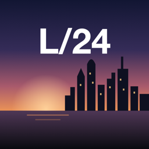

Политика конфиденциальности
LIFE / 24 (LSim) · действует с 26 октября 2026
LIFE / 24 — личное приложение для iPhone, которым пользуется только его разработчик. У приложения нет сервера, рекламы, аналитики и сторонних SDK.
Что хранится на телефоне
Факты из жизни, суммы доходов и расходов, чекпоинты и их история хранятся в локальной базе на iPhone. Отметки самочувствия и сна по умолчанию тоже остаются только на телефоне — в таблицу они уходят, только если владелец сам включит это в настройках. Лекарства и личный план поддержки не отправляются никогда.
Что получает Google
Приложение запрашивает у Google один доступ — https://www.googleapis.com/auth/drive.file.
С ним оно может открывать и менять только файлы, которые создало само. Остальные файлы
Google Диска, почта, контакты и календарь приложению недоступны.
В таблицу «Life Simulator Sync» в Диске владельца уходят:
- чекпоинты, их статусы (выполнено, пропущено, перенесено) и история изменений с заметками владельца;
- факты и суммы, которые владелец не скрыл. Скрытые факты не уходят, а уже отправленный текст затирается, если факт скрыть позже;
- отметки настроения, энергии и сна — только после отдельного включения в настройках. При выключении они стираются из таблицы.
Для пересчёта сумм в рубли приложение загружает официальные курсы с сайта Банка России (cbr.ru). Никаких личных данных при этом не передаётся.
Ключи доступа к Google хранятся в связке ключей iPhone и не покидают устройство. Данные из Google используются только для работы этой таблицы — не продаются, не передаются третьим лицам и не используются для обучения моделей или рекламы.
Как отозвать доступ и удалить данные
- В приложении: Настройки → Life Simulator Sync → «Отключить Google». Доступ отзывается у Google, ключи стираются с телефона.
- В аккаунте Google: myaccount.google.com/permissions → LSim → удалить доступ.
- Таблицу можно удалить в Google Диске. Данные на телефоне — в Настройках приложения или удалив приложение.
Связь
Вопросы — через github.com/pip4show.
Privacy policy (English)
LIFE / 24 (LSim) is a personal iPhone app used only by its developer. It has no server, ads, analytics or third-party SDKs. All data is stored on the device. Mood and sleep entries leave the device only if the owner explicitly turns this on in the app’s settings (and are erased from the sheet when it is turned off); medication and support-plan entries never leave the device.
The app requests a single Google scope, https://www.googleapis.com/auth/drive.file, which only allows access
to files the app itself created. It creates one Google Sheet, “Life Simulator Sync”, in the owner’s Google Drive and writes
there only checkpoints with their statuses and change history, the life events the owner chose not to hide and, if enabled,
mood and sleep entries. Exchange rates are downloaded from the Bank of Russia (cbr.ru) without sending any personal data. Google tokens are kept in the
iPhone Keychain. Google user data is used solely to operate that sheet; it is not sold, shared with third parties, or used
for advertising or to train models. The app’s use of information received from Google APIs adheres to the
Google API Services User Data Policy,
including the Limited Use requirements.
To revoke access: in the app, Settings → Life Simulator Sync → “Disconnect Google”, or at myaccount.google.com/permissions. Contact: github.com/pip4show.